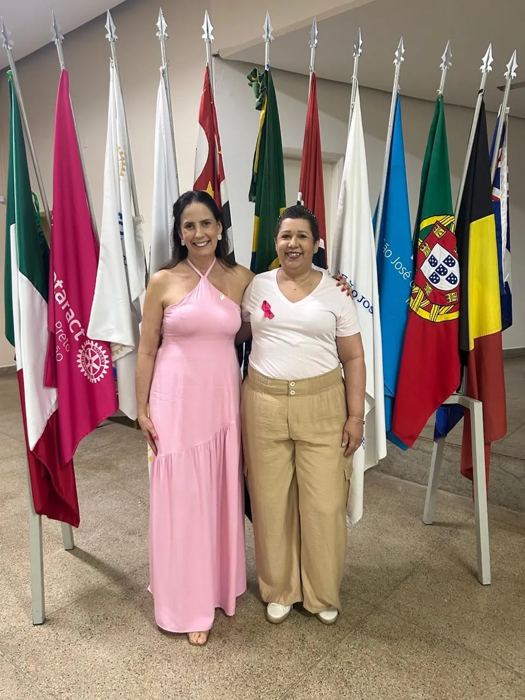
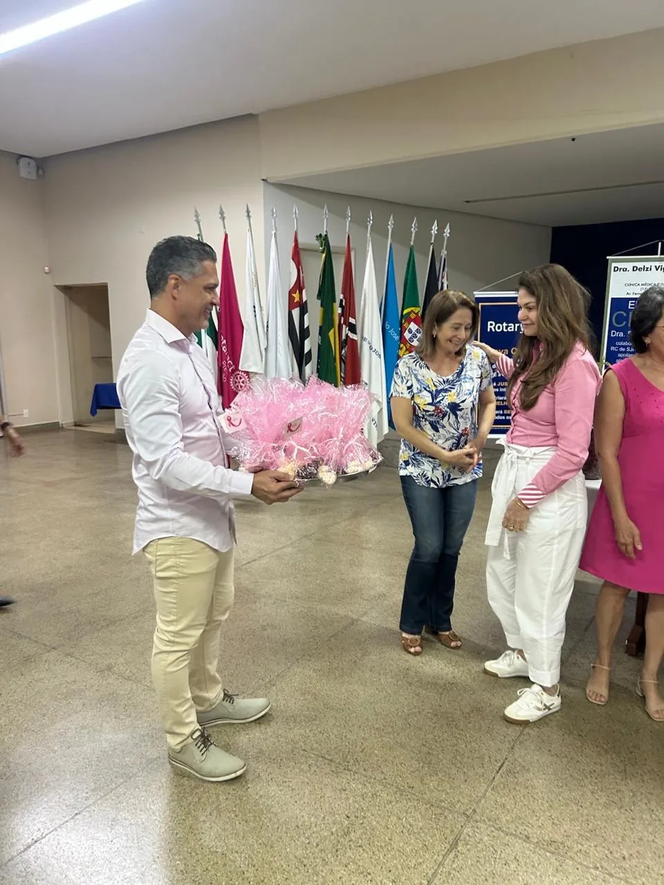
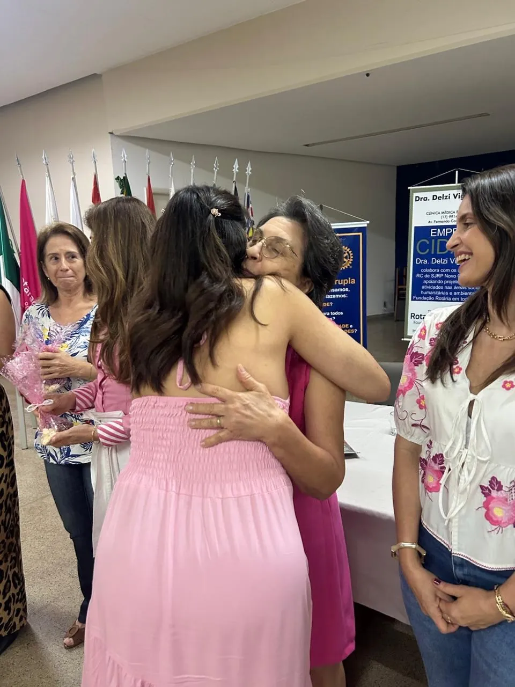
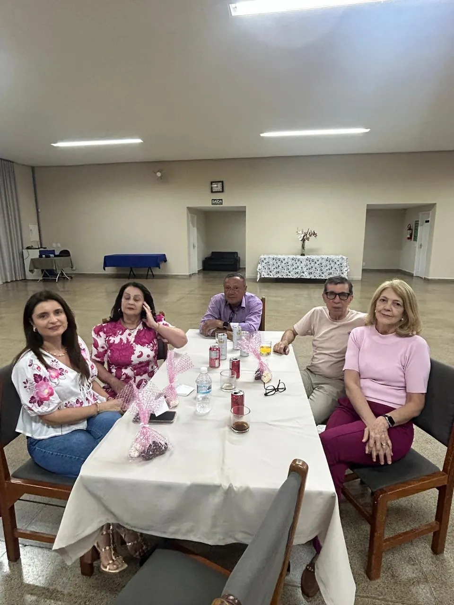
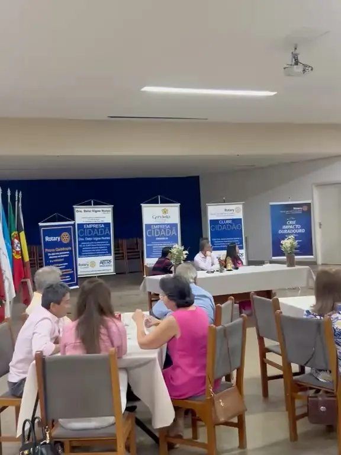
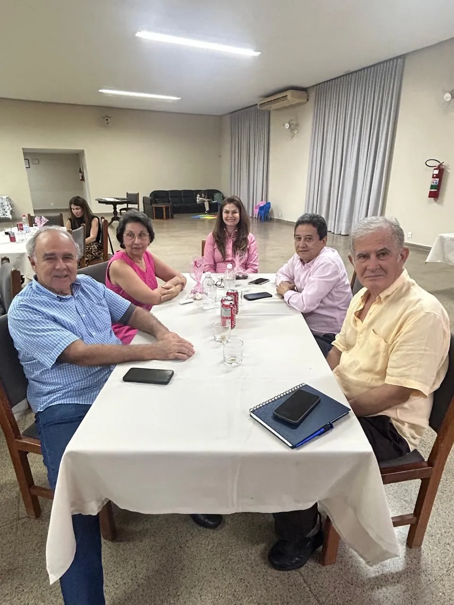

Na reunião de 7 de outubro, Eliana Ramos falou sobre o câncer de mama em primeira pessoa. Depois, jantar e companheirismo.






1 / 6
Convidadas vestidas de rosa diante das bandeiras na Casa do Rotary
A reunião ordinária de quarta-feira, 7 de outubro, teve um momento que ninguém vai esquecer. O clube recebeu Eliana Ramos para uma palestra sobre o câncer de mama.
Com um depoimento forte e em primeira pessoa, Eliana falou de cuidado, prevenção, diagnóstico precoce e da importância de olhar para a própria saúde com carinho e atenção.
Depois da reflexão, a noite seguiu com um jantar e muito companheirismo entre associados e convidados. A mensagem ficou: a prevenção salva vidas, em outubro e o ano inteiro.
Fotos: Rotary Club de São José do Rio Preto – Novo Cinquentenário.
Essa história é de muita gente. Ela aconteceu porque rotarianos, famílias e parceiros decidiram fazer junto. Venha escrever a próxima com a gente.
Com o Instituto Alarme e a AREC, o clube ajuda a preparar a festa e vende os convites. Em 2026, foram mais de 600 convidados, e toda a renda vai para o Alarme.